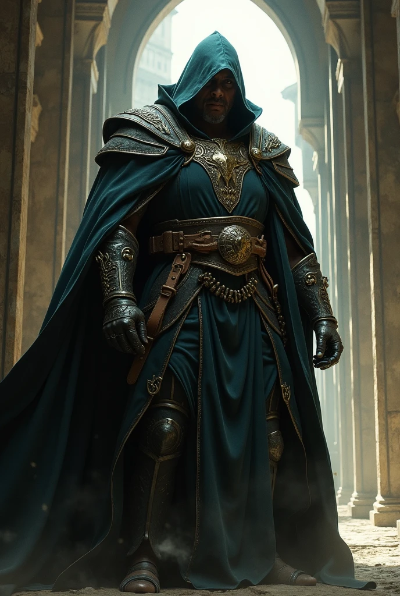
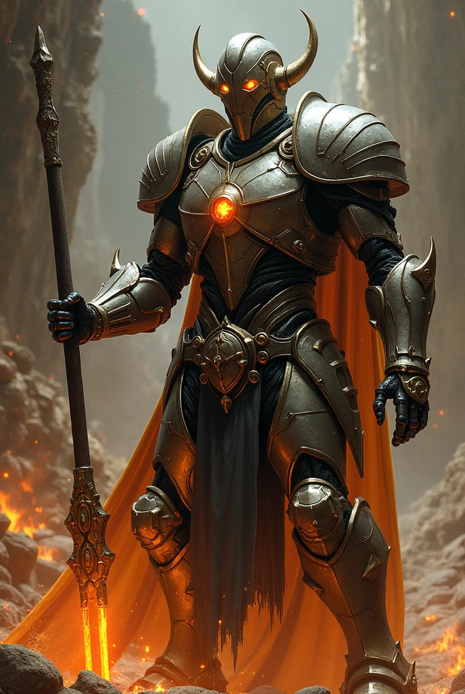
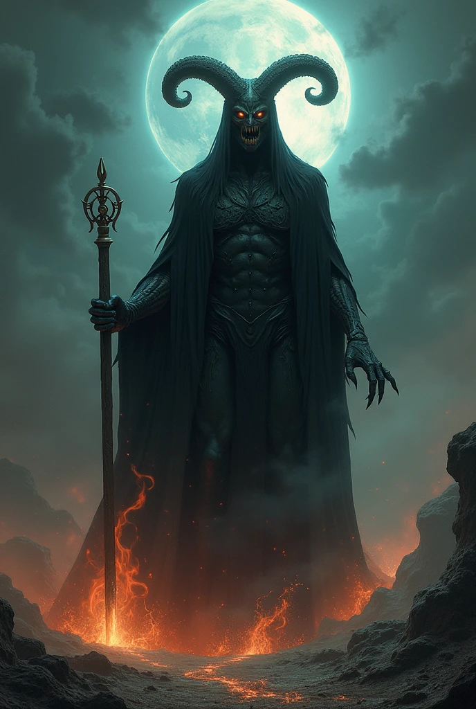

Kingpin, the Merchant of Angmar
A massive and cunning human who became wealthy by controlling the illegal trade of dark artifacts. He finances the armies of Angmar in exchange for power and influence.

Ultron, the Mithril Automaton
A creation of the dwarves, forged from mithril and enchanted with a mind of its own. Ultron rebelled against his creators and seeks to exterminate all life to achieve "perfection."

Mephisto, the Temptor of Souls
A demonic spirit roaming Middle-earth, offering power in exchange for souls. He is a master of manipulation and has corrupted kings, elves, and even wizards.

Doctor Doom, the Tyrant of Latverion
A human necromancer, originally a king of a small realm in the eastern part of Middle-earth, who was corrupted by Morgoth. He wields enchanted armor and is a master of dark sorcery.